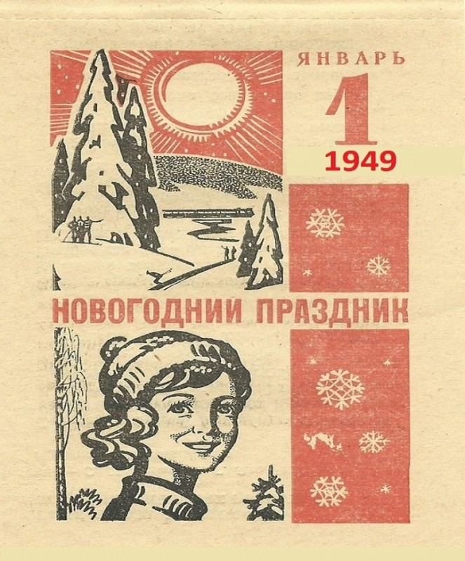

Интересные факты:
1. Подарки в носках
Ирландские и английские дети ищут новогодние подарки в носках или чулках. Чтобы Санта Клаус не тратил время на поиски места для подарка, чулки вешают на видное место, у камина
2. Первая новогодняя открытка
Первая новогодняя открытка появилась в Англии в 19 веке. В 1843 году увидела свет первая рождественская открытка, её напечатали в лондонской типографии. Так появилась традиция обмениваться поздравительными открытками на Новый год.
3. 1 января не рабочий день
В нашей стране 1 января стал праздничным, нерабочим днём в 1949 году. Соответствующий приказ издал Президиум Верховного Совета СССР накануне Нового года – 23 декабря 1948 года 